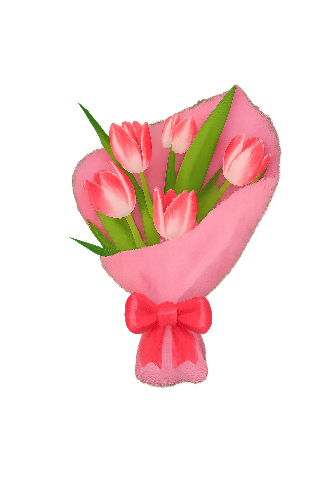

💖 Para mi persona favorita "ELI" 💖

💖 Tal vez no seas mi novia, Pero eso no impide amarte, que te quiera , te valore y que te piense. Hay personas que llegan sin promesas, sin compromisos, y aun así transforman lo cotidiano en algo especial. Tú eres una de ellas.
No vengo a hablar de amor como lo pintan en películas. pero si de conexión, de esa paz que se siente cuando estamos juntos. No necesito que me correspondas, solo que sepas que tu existencia ya es suficiente para hacerme sonreír.
A veces me descubro queriendo compartirte cosas sin razón, solo porque tu opinión me importa. O guardando momentos que me gustaría que vieras, porque tu mirada les da sentido. No es obsesión, no es deseo. Es admiración tranquila, es cariño que no exige nada.
Y si algún día decides caminar a mi lado, lo haré con felicidad. Pero si no, seguiré deseándote lo mejor, aun que no sea conmigo, Porque lo que siento por ti no depende de lo que recibo, sino de lo que eres.
Gracias por existir. Gracias por ser tú. Te amoo... ELI.💖
 ❤
❤